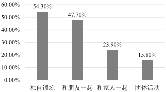

第 1 题 #
1.A. thereforeB. howeverC. againD. moreover
点击查看答案
此题暂无可用答案。
考研英语 · questions · 2021
题号和章节目录由结构化数据生成。选项统一显示 A.、B.、C.、D.；原标记保留在 JSON 中。
Read the following text. Choose the best word(s) for each numbered blank and mark A, B, C or D on the ANSWER SHEET. (10 points)
It’s not difficult to set targets for staff. It is much harder, 1 , to understand their negative consequences. Most work-related behaviors have multiple components. 2 one and the others become distorted.
Travel on a London bus and you’ll 3 see how this works with drivers. Watch people get on and show their tickets. Are they carefully inspected? Never. Do people get on without paying? Of course! Are there inspectors to 4 that people have paid? Possibly, but very few. And people who run for the bus? They are 5 . How about jumping lights? Buses do so almost as frequently as cyclists.
Why? Because the target is 6 . People complained that buses were late and infrequent. 7 , the number of buses and bus lanes were increased, and drivers were 8 or punished according to the time they took. And drivers hit these targets. But they 9 hit cyclists. If the target was changed to 10 , you would have more inspectors and more sensitive pricing. If the criterion changed to safety, you would get more 11 drivers who obeyed traffic laws. But both these criteria would be at the expense of time.
There is another 12 : people became immensely inventive in hitting targets. Have you 13 that you can leave on a flight an hour late but still arrive on time? Tailwinds? Of course not! Airlines have simply changed the time a 14 is meant to take. A one-hour flight is now billed as a two-hour flight.
The 15 of the story is simple. Most jobs are multidimensional, with multiple criteria. Choose one criterion and you may well 16 others. Everything can be done faster and made cheaper, but there is a 17 . Setting targets can and does have unforeseen negative consequences.
This is not an argument against target-setting. But it is an argument for exploring consequences first. All good targets should have multiple criteria 18 critical factors such as time, money, quality and customer feedback. The trick is not only to 19 just one or even two dimensions of the objective, but also to understand how to help people better 20 the objective.
此题暂无可用答案。
此题暂无可用答案。
此题暂无可用答案。
此题暂无可用答案。
此题暂无可用答案。
此题暂无可用答案。
此题暂无可用答案。
此题暂无可用答案。
此题暂无可用答案。
此题暂无可用答案。
此题暂无可用答案。
此题暂无可用答案。
此题暂无可用答案。
此题暂无可用答案。
此题暂无可用答案。
此题暂无可用答案。
此题暂无可用答案。
此题暂无可用答案。
此题暂无可用答案。
此题暂无可用答案。
Read the following four texts. Answer the questions after each text by choosing A, B, C or D. Mark your answers on the ANSWER SHEET. (40 points)
“Reskilling” is something that sounds like a buzzword but is actually a requirement if we plan to have a future in which a lot of would-be workers do not get left behind. We know we are moving into a period where the jobs in demand will change rapidly, as will the requirements of the jobs that remain. Research by the World Economic Forum finds that on average 42 percent of the “core skills” within job roles will change by 2022. That is a very short timeline.
The question of who should pay for reskilling is a thorny one. For individual companies, the temptation is always to let go of workers whose skills are no longer in demand and replace them with those whose skills are. That does not always happen. AT&T is often given as the gold standard of a company that decided to do a massive reskilling program rather than go with a fire-and-hire strategy. Other companies had also pledged to create their own plans. When the skills mismatch is in the broader economy, though, the focus usually turns to government to handle. Efforts in Canada and elsewhere have been arguably languid at best, and have given us a situation where we frequently hear of employers begging for workers even at times and in regions where unemployment is high.
With the pandemic, unemployment is very high indeed. In February, at 3.5 percent and 5.5 percent respectively, unemployment rates in Canada and the U.S. were at generational lows and worker shortages were everywhere. As of May, those rates had spiked up to 13.3 percent and 13.7 percent, and although many worker shortages had disappeared, not all had done so. In the medical field, to take an obvious example, the pandemic meant that there were still clear shortages of doctors, nurses and other medical personnel.
Of course, it is not like you can take an unemployed waiter and train him to be a doctor in a few weeks. But even if you cannot close the gap, maybe you can close others, and doing so would be to the benefit of all concerned. That seems to be the case in Sweden: When forced to furlough 90 percent of their cabin staff, Scandinavian Airlines decided to start up a short retraining program that reskilled the laid-off workers to support hospital staff. The effort was a collective one and involved other companies as well as a Swedish university.
21. Research by the World Economic Forum suggests ____
此题暂无可用答案。
22. AT&T is cited to show ____
此题暂无可用答案。
23. Efforts to resolve the skills mismatch in Canada ____
此题暂无可用答案。
24. We can learn from Paragraph 3 that there was ____
此题暂无可用答案。
25. Scandinavian Airlines decided to ____
此题暂无可用答案。
With the global population predicted to hit close to 10 billion by 2050, and forecasts that agricultural production in some regions will need to nearly double to keep pace, food security is increasingly making headlines. In the UK, it has become a big talking point recently too, for a rather particular reason: Brexit.
Brexit is seen by some as an opportunity to reverse a recent trend towards the UK importing food. The country produces only about 60 percent of the food it eats, down from almost three-quarters in the late 1980s. A move back to self-sufficiency, the argument goes, would boost the farming industry, political sovereignty and even the nation’s health. Sounds great — but how feasible is this vision?
According to a report on UK food production from the University of Leeds, UK, 85 percent of the country’s total land area is associated with meat and dairy production. That supplies 80 percent of what is consumed, so even covering the whole country in livestock farms wouldn’t allow us to cover all our meat and dairy needs.
There are many caveats to those figures, but they are still grave. To become much more self-sufficient, the UK would need to drastically reduce its consumption of animal foods, and probably also farm more intensively — meaning fewer green fields and more factory-style production.
But switching to a mainly plant-based diet wouldn’t help. There is a good reason why the UK is dominated by animal husbandry: most of its terrain doesn’t have the right soil or climate to grow crops on a commercial basis. Just 25 percent of the country’s land is suitable for crop-growing, most of which is already occupied by arable fields. Even if we converted all the suitable land to fields of fruit and veg — which would involve taking out all the nature reserves and removing thousands of people from their homes — we would achieve only a 30 percent boost in crop production.
Just 23 percent of the fruit and vegetables consumed in the UK are currently home-grown, so even with the most extreme measures we could meet only 30 percent of our fresh produce needs. That is before we look for the space to grow the grains, sugars, seeds and oils that provide us with the vast bulk of our current calorie intake.
26. Some people argue that food self-sufficiency in the UK would ____
此题暂无可用答案。
27. The report by the University of Leeds shows that in the UK ____
此题暂无可用答案。
28. Crop-growing in the UK is restricted due to ____
此题暂无可用答案。
29. It can be learned from the last paragraph that British people ____
此题暂无可用答案。
30. The author’s attitude to food self-sufficiency in the UK is ____
此题暂无可用答案。
When Microsoft bought task management app Wunderlist and mobile calendar Sunrise in 2015, it picked up two newcomers that were attracting considerable buzz in Silicon Valley. Microsoft’s own Office dominates the market for “productivity” software, but the start-ups represented a new wave of technology designed from the ground up for the smartphone world.
Both apps, however, were later scrapped after Microsoft said it had used their best features in its own products. Their teams of engineers stayed on, making them two of the many “acqui-hires” that the biggest companies have used to feed their great hunger for tech talent.
To Microsoft’s critics, the fates of Wunderlist and Sunrise are examples of a remorseless drive by Big Tech to chew up any innovative companies that lie in their path. “They bought the seedlings and closed them down,” complained Paul Arnold, a partner at San Francisco-based Switch Ventures, putting an end to businesses that might one day turn into competitors. Microsoft declined to comment.
Like other start-up investors, Mr Arnold’s own business often depends on selling start-ups to larger tech companies, though he admits to mixed feelings about the result: “I think these things are good for me, if I put my selfish hat on. But are they good for the American economy? I don’t know.”
The US Federal Trade Commission says it wants to find the answer to that question. This week, it asked the five most valuable US tech companies for information about their many small acquisitions over the past decade. Although only a research project at this stage, the request has raised the prospect of regulators wading into early-stage tech markets that until now have been beyond their reach.
Given their combined market value of more than $5.5 trillion, rifling through such small deals — many of them much less prominent than Wunderlist and Sunrise — might seem beside the point. Between them, the five biggest tech companies have spent an average of only $3.4 billion a year on sub-$1 billion acquisitions over the past five years — a drop in the ocean compared with their massive financial reserves, and the more than $130 billion of venture capital that was invested in the US last year.
However, critics say the big companies use such deals to buy their most threatening potential competitors before their businesses have a chance to gain momentum, in some cases as part of a “buy and kill” tactic to simply close them down.
31. What is true about Wunderlist and Sunrise after their acquisitions?
此题暂无可用答案。
32. Microsoft’s critics believe that the big tech companies tend to ____
此题暂无可用答案。
33. Paul Arnold is concerned that small acquisitions might ____
此题暂无可用答案。
34. The US Federal Trade Commission intends to ____
此题暂无可用答案。
35. For the five biggest tech companies, their small acquisitions have ____
此题暂无可用答案。
We’re fairly good at judging people based on first impressions, thin slices of experience ranging from a glimpse of a photo to a five-minute interaction, and deliberation can be not only extraneous but intrusive. In one study of the ability she called “thin slicing” the late psychologist Nalini Ambady asked participants to watch silent 10-second video clips of professors and to rate the instructor’s overall effectiveness. Their ratings correlated strongly with students’ end-of-semester ratings. Another set of participants had to count backward from 1,000 by nines as they watched the clips, occupying their conscious working memory. Their ratings were just as accurate, demonstrating the intuitive nature of the social processing.
Critically, another group was asked to spend a minute writing down reasons for their judgment, before giving the rating. Accuracy dropped dramatically. Ambady suspected that deliberation focused them on vivid but misleading cues, such as certain gestures or utterances, rather than letting the complex interplay of subtle signals form a holistic impression. She found similar interference when participants watched 15-second clips of pairs of people and judged whether they were strangers, friends, or dating partners.
Other research shows we’re better at detecting deception from thin slices when we rely on intuition instead of reflection. “It’s as if you’re driving a stick shift,” says Judith Hall, a psychologist at Northeastern University, “and if you start thinking about it too much, you can’t remember what you’re doing. But if you go on automatic pilot, you’re fine. Much of our social life is like that.”
Thinking too much can also harm our ability to form preferences. College students’ ratings of strawberry jams and college courses aligned better with experts’ opinions when the students weren’t asked to analyze their rationale. And people made car-buying decisions that were both objectively better and more personally satisfying when asked to focus on their feelings rather than on details, but only if the decision was complex — when they had a lot of information to process.
Intuition’s special powers are unleashed only in certain circumstances. In one study, participants completed a battery of eight tasks, including four that tapped reflective thinking (discerning rules, comprehending vocabulary) and four that tapped intuition and creativity (generating new products or figures of speech). Then they rated the degree to which they had used intuition (“gut feelings,” “hunches,” “my heart”). Use of their gut hurt their performance on the first four tasks, as expected, and helped them on the rest.
Sometimes the heart is smarter than the head.
36. Nalini Ambady’s study deals with ____
此题暂无可用答案。
37. In Ambady’s study, rating accuracy dropped dramatically when participants ____
此题暂无可用答案。
38. Judith Hall mentions driving to show that ____
此题暂无可用答案。
39. When you are making complex decisions, it is advisable to ____
此题暂无可用答案。
40. What can we learn from the last paragraph?
此题暂无可用答案。
Read the following text and answer the questions by choosing the most suitable subheading from the list A-G for each numbered paragraphs (41-45). There are two extra subheadings which you do not need to use. Mark your answers on the ANSWER SHEET. (10 points)
How to Disagree with Someone More Powerful Than You
Your boss proposes a new initiative you think won’t work. Your senior colleague outlines a project timeline you believe is unrealistic. What do you say when you disagree with someone who has more power than you do? How do you decide whether it’s worth speaking up? And if you do, what exactly should you say? Here’s how to disagree with someone more powerful than you.
41. _________________________
You may decide it’s best to hold off on voicing your opinion. Maybe you haven’t finished thinking the problem through, or you want to get a clearer sense of what the group thinks. If you think other people are going to disagree too, you might want to gather your army first. People can contribute experience or information to your thinking — all the things that would make the disagreement stronger or more valid. It’s also a good idea to delay the conversation if you are in a meeting or other public space. Discussing the issue in private will make the powerful person feel less threatened.
此题暂无可用答案。
42. _________________________
Before you share your thoughts, think about what the powerful person cares about —it may be the credibility of their team or getting a project done on time. You’re more likely to be heard if you can connect your disagreement to a higher purpose. State it overtly, contextualizing your statements so that you’re seen not as a disagreeable subordinate but as a colleague who’s trying to advance a common objective. The discussion will then become more like a chess game than a boxing match.
此题暂无可用答案。
43. _________________________
This step may sound overly deferential, but it’s a smart way to give the powerful person psychological safety and control. You can say something like, “I know we seem to be moving toward a first-quarter commitment here. I have reasons to think that won’t work. I’d like to lay out my reasoning. Would that be OK?” This gives the person a choice, allowing him to verbally opt in. And, assuming he says yes, it will make you feel more confident about voicing your disagreement.
此题暂无可用答案。
44. _________________________
You might feel your heart racing or your face turning red, but do whatever you can to remain neutral in both your words and actions. When your body language communicates reluctance or anxiety, it undercuts the message. It sends a mixed message, and your counterpart gets to choose what signals to read. Deep breaths can help, as can speaking more slowly and deliberately. When we feel panicky, we tend to talk louder and faster. Simply slowing the pace and talking in an even tone helps the other person cool down and does the same for you. It also makes you seem confident, even if you aren’t.
此题暂无可用答案。
45. _________________________
Emphasize that you’re only offering your opinion, not gospel truth. It may be a well-informed, well-researched opinion, but it’s still an opinion, so talk tentatively and slightly understate your confidence. Instead of saying, “If we set an end-of-quarter deadline, we will never make it,” say, “This is just my opinion, but I don’t see how we will make that deadline.” Having asserted your opinion (as a position, not as a fact), demonstrate equal curiosity about other views. Remind the person that this is your point of view, and then invite critique. Be open to hearing other opinions.
此题暂无可用答案。
46. Directions:
Translate the following text into Chinese. Write your translation on the ANSWER SHEET. (15 points)
We tend to think that friends and family members are our biggest sources of connection, laughter, and warmth. While that may well be true, researchers have also recently found that interacting with strangers actually brings a boost in mood and feelings of belonging that we didn’t expect.
In one series of studies, researchers instructed Chicago-area commuters using public transportation to strike up a conversation with someone near them. On average, participants who followed this instruction felt better than those who had been told to stand or sit in silence. The researchers also argued that when we shy away from casual interactions with strangers, it is often due to a misplaced anxiety that they might not want to talk to us. Much of the time, however, this belief is false. As it turns out, many people are actually perfectly willing to talk — and may even be flattered to receive your attention.
此题暂无可用答案。
47. Directions:
Suppose you are organizing an online meeting. Write an email to Jack, an international student, to
1) invite him to participate, and
2) tell him about the details.
You should write about 100 words on the ANSWER SHEET.
Do not use your own name. Use “Li Ming” instead. (10 points)
此题暂无可用答案。
48. Directions:
Write an essay based on the chart below. In your writing, you should
1) interpret the chart, and
2) give your comments.
You should write about 150 words on the ANSWER SHEET. (15 points)

此题暂无可用答案。